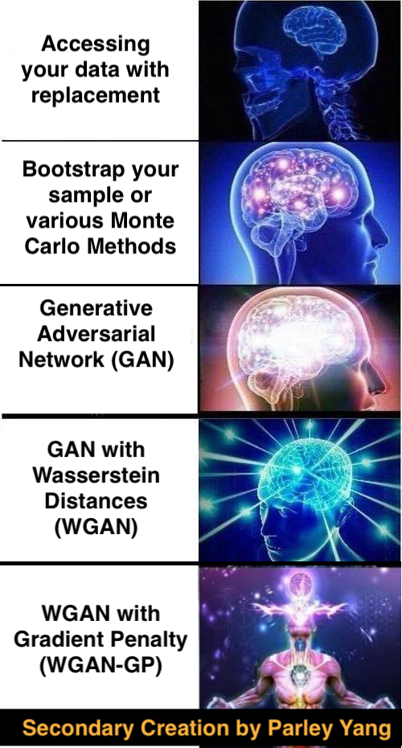

Happy Deep Learning
ST456 @ LSE
LT 2022
NOTE: This course has finished.
Weekly Blog Seris
Deep Learning with a tale of two cities
Blog I / IX: blogs from a Cambridge Mathematician
on teaching a Master course on Statistical Machine Learning at LSE
Blog II / IX: principle of ML and option pricing
Blog III / IX: down the hill of gradients
Blog IV / IX: convolve the pictures
Blog V / IX: wrapping up the Convolutions and reflecting upon Innovations
Blog VI / IX: the time
Blog VII / IX: time, coder, and generation
Blog VIII / IX: Starbucks chats and more on decision makings
Blog IX / IX: A summary and a reflection on the course
Notes
Extra Mathematical Notes for Lectures and Classes
A comparative schedule against other coursees
Helpful links
Dive into Deep Learning
Deep Learning
Interesting Pictures
Week 11:

Week 4:
Parley Ruogu Yang
Home
About
::
LinkedIn
::
Google Scholar